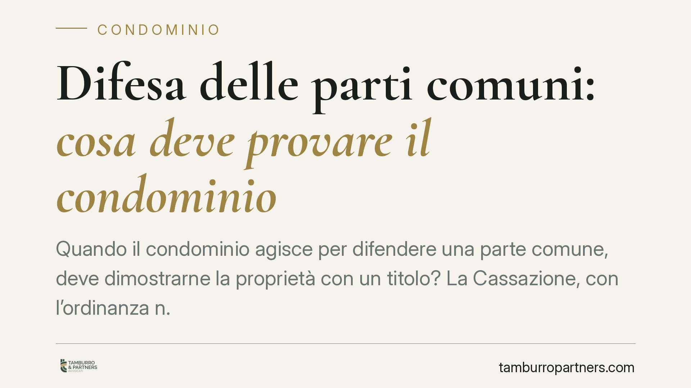

Difesa delle parti comuni: cosa deve provare il condominio
Quando il condominio agisce per difendere una parte comune, deve dimostrarne la proprietà con un titolo? La Cassazione, con l'ordinanza n. 16886 del 24 giugno 2025, risponde di no: basta provare il collegamento funzionale del bene con l'edificio. L'onere della prova si sposta su chi rivendica la proprietà esclusiva. Una precisazione che ribalta diversi equilibri processuali.

Il caso
La questione affrontata dalla Corte di Cassazione è classica nei contenziosi condominiali: un bene dell'edificio (un cortile, un sottotetto, un'area, un muro) viene conteso tra la collettività dei condòmini e un singolo che ne afferma la titolarità esclusiva.
Il condominio agisce in giudizio per tutelare quel bene come parte comune. La Corte d'Appello aveva ritenuto che, per farlo, il condominio dovesse fornire la prova rigorosa della proprietà comune, come se si trattasse di una vera e propria rivendica (l'azione con cui si chiede la restituzione di un bene dimostrandone la titolarità risalendo ai passaggi di proprietà). La Cassazione ha corretto il tiro.
Inquadramento normativo
Il riferimento è l'art. 1117 del codice civile, che individua le parti comuni dell'edificio. La norma stabilisce una presunzione legale: determinati beni — suolo, fondazioni, muri maestri, tetti, scale, androni, cortili — si presumono di proprietà comune di tutti i condòmini, salvo che il titolo disponga diversamente.
La parola chiave è *presunzione*. Chi beneficia di una presunzione di legge non deve dimostrare il fatto presunto: deve essere l'altra parte a provarne l'insussistenza. L'art. 1117 c.c. costruisce quindi un regime probatorio favorevole alla comunione.
Con l'ordinanza n. 16886/2025 la Cassazione applica questa logica al piano processuale. Il condominio che agisce a tutela di una parte comune non deve ricostruire la catena dei titoli di proprietà. Gli basta dimostrare che il bene rientra tra quelli dell'art. 1117 c.c. per destinazione funzionale: cioè che serve all'uso o al godimento comune dell'edificio, o ne costituisce elemento strutturale.
Provato quel collegamento, scatta la presunzione di comunione. A quel punto, se un condòmino sostiene di esserne proprietario esclusivo, è lui a dover vincere la presunzione, producendo un titolo contrario (un atto di acquisto, una convenzione, un titolo originario di formazione del condominio) che attribuisca il bene alla sua sfera privata.
Implicazioni pratiche
La decisione ridisegna l'onere della prova nei giudizi su beni condominiali contesi.
Per il condominio, l'azione di tutela diventa più agevole. Non occorre affrontare la prova diabolica tipica della rivendica, spesso impossibile da assolvere su edifici datati o con documentazione incompleta. È sufficiente dimostrare la funzione comune del bene.
Per il singolo condòmino che afferma la proprietà esclusiva, il quadro si complica. Non basta eccepire o contestare: deve produrre un titolo specifico e idoneo a escludere il bene dalla comunione. In mancanza, prevale la presunzione di cui all'art. 1117 c.c.
L'orientamento incide anche sulle strategie preliminari. Prima di avviare o resistere a una controversia, diventa decisivo verificare la documentazione d'origine dell'edificio: il regolamento condominiale di natura contrattuale, gli atti di prima vendita, le eventuali riserve di proprietà a favore del costruttore.
Attenzione, però: il collegamento funzionale non è un automatismo. Il condominio deve comunque allegarlo e dimostrarlo in concreto. Beni privi di una relazione effettiva con il godimento comune restano fuori dalla presunzione.
Cosa fare in concreto
- Recuperate i titoli d'origine. Reperite l'atto costitutivo del condominio, il regolamento contrattuale e i primi atti di compravendita: sono i documenti che più spesso risolvono la controversia.
- Verificate la destinazione del bene. Documentate con planimetrie, perizie e fotografie il collegamento funzionale tra il bene conteso e l'uso comune dell'edificio.
- Deliberate correttamente l'azione. Accertate che l'assemblea abbia autorizzato l'amministratore ad agire o resistere in giudizio, nei limiti dei suoi poteri.
- Valutate la posizione del condòmino rivendicante. Chi afferma la proprietà esclusiva predisponga per tempo un titolo chiaro e idoneo: contestazioni generiche non bastano a superare la presunzione.
- Richiedete un'analisi preventiva. Prima del contenzioso, consigliamo di esaminare la solidità probatoria della propria posizione, perché l'esito dipende in larga parte dalla documentazione disponibile.
---
*Contributo informativo a cura di Tamburro & Partners - Avv. Giuseppe Tamburro. Non costituisce parere legale.*
Ogni condominio ha una storia a sé.
Se gestisci un'amministrazione e vuoi un confronto su una specifica questione condominiale, scrivi allo studio. Ti rispondiamo entro un giorno lavorativo.